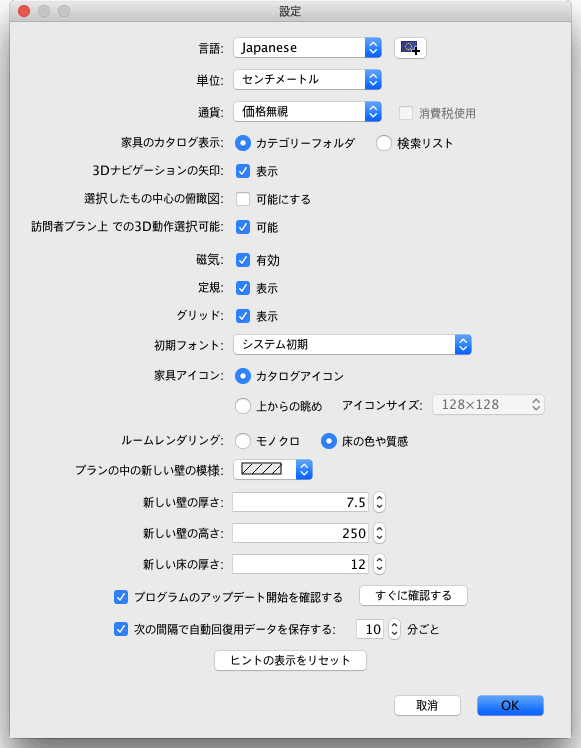

| 設定を編集 | |||
Sweet Home 3Dの設定を編集するには、 Sweet Home 3D > 設定... 、Mac OS X・他のシステム環境で ファイル > 設定... を選択して下さい。  設定画面では、間取りプラン作成時に使用されるSweet Home 3Dのユーザ・インターフェースの 言語 ・ 構成 ・ 定規およびグリッドを選択でき、そして長さと領域などを表示します。 間取りプランに
壁の作成 および 家具を配置 する際の 磁気
をチェックボックスで有効または無効にします。 新しい壁の厚さ の値は 一旦設定画面を閉じると作成したすべての壁の厚さ
が設定されます。 最後に、 ヒントの表示をリセット ボタンは、以前 再度このヒントを表示しない
のチェックボックスをチェックして非表示にした指示をリセットし、各ツールをクリックしたときに表示する
|


|